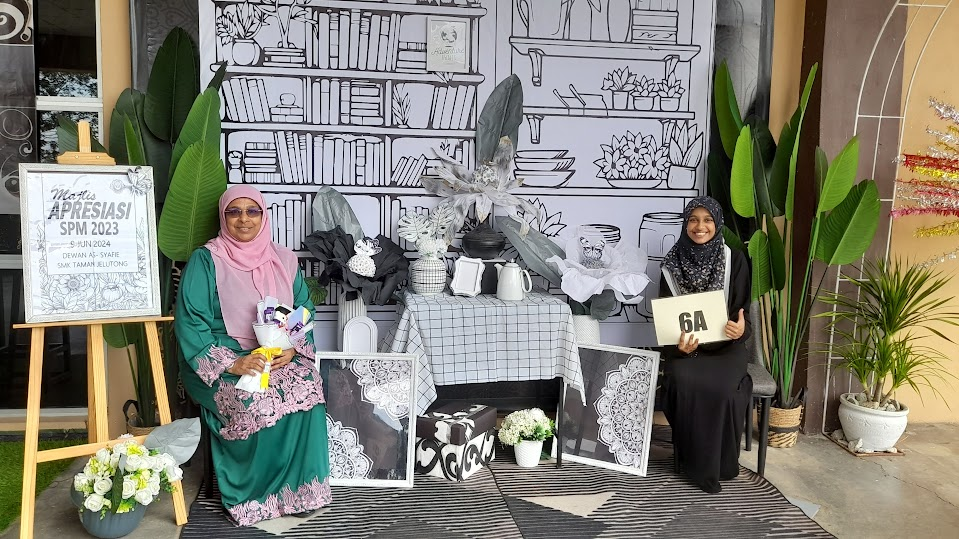
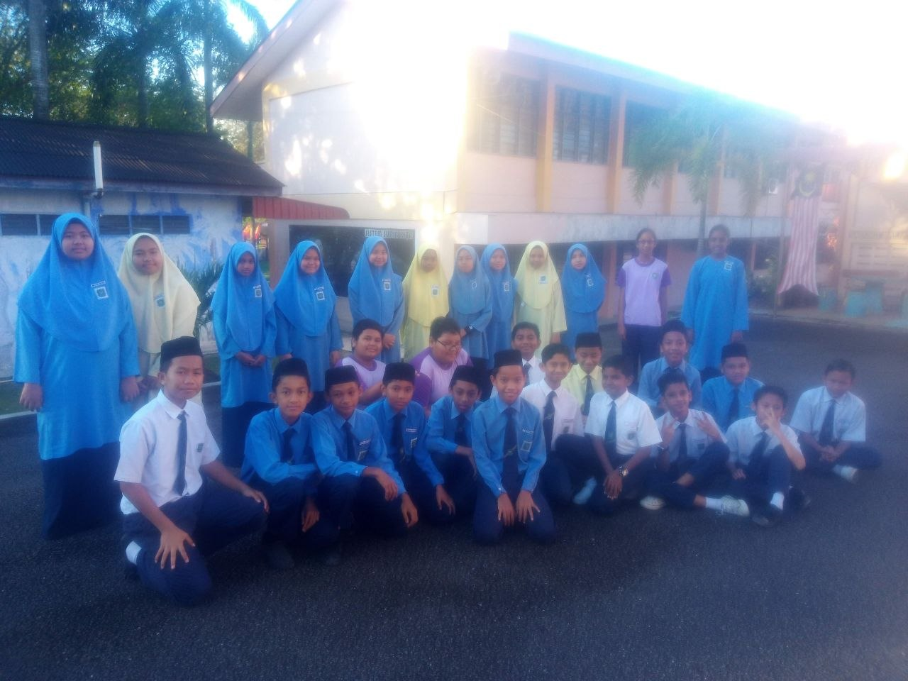
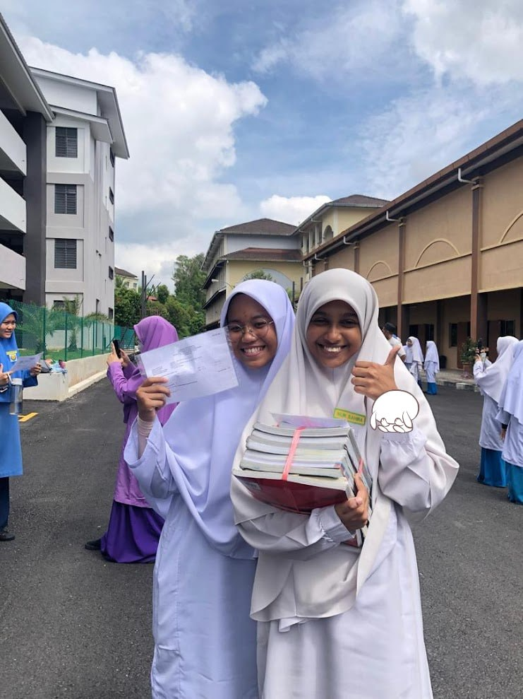
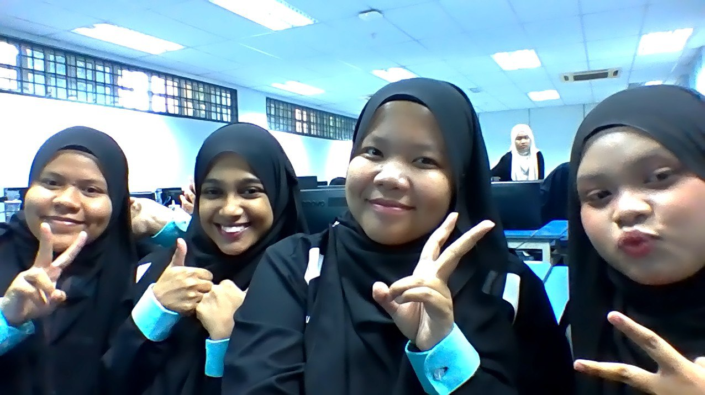

My Academic Journey 📚

| Level | School / Institution | Year |
|---|---|---|
| Primary School | Sekolah Kebangsaan Taman Jelutong | 2013 - 2014 |
| Sekolah Kebangsaan Sri Kulim | 2015 - 2018 | |
| Highschool | Sekolah Menengah Kebangsaan Taman Jelutong | 2019 - 2023 |
| Diploma | UiTM Kedah | 2024 - Present |
| Visit Official UiTM Kedah Website 🌸 | ||

In primary school I need to transfer to another school as my mom which also a teacher in the same school of mine was tranfered to another school. So, it is a lot of work in morning for her to first send me in another school and then she will need to go back to hers, so she just decides "let's change the school together why don't we?". I am okay with it because yeah, why not right?

Then, in highschool, it was a totally new experience for me. I love math subject, but it had another plan for me. My result dropped just like I trip from a small rock and fell in a speed limit into a big hole of darkness... I never imagined my score in primary school which is an average of 80 percent will drop to FAIL result when I'm in highschool??? I felt hopeless...but I still have my hope in English subject, eventhough I am not good at it, but it is okay! Long story short, I am glad that I passed all subject in SPM, alhamdullilah...🥹 Thank you to everyone that does not give up on me and guide me through the critical moment untill I get the result which I never expect from a weak student like me...🫂

Now that I’m in university, I’ve realized that high school and university are completely different environments. Adapting hasn’t been easy, and I’m struggling to keep up with my friends and classmates. Still, I’m trying my best, and I’m grateful to everyone who has helped me along the way, especially Akma, Ainul, and Husnina, who have helped me a lot by answering my questions and helping me understand things better, even though they are first-time diploma students too. There are times when I feel like I’m the only one who doesn’t know the answer, but I keep reminding myself that learning is a process. No matter how others see me, I’ll continue to learn, improve, and do my best.